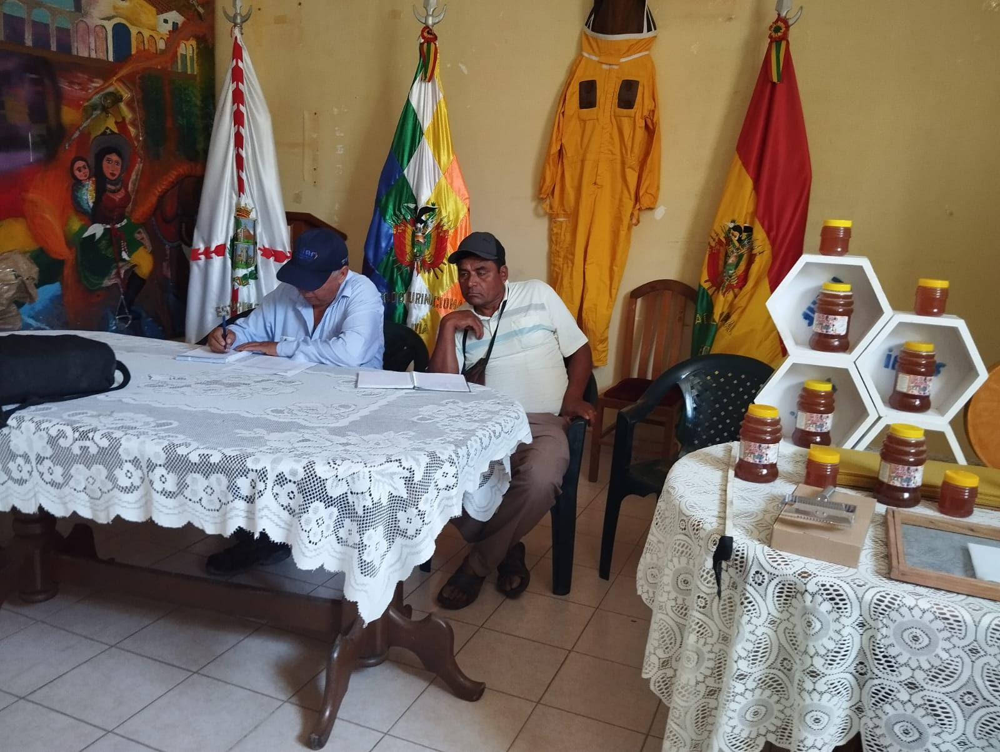
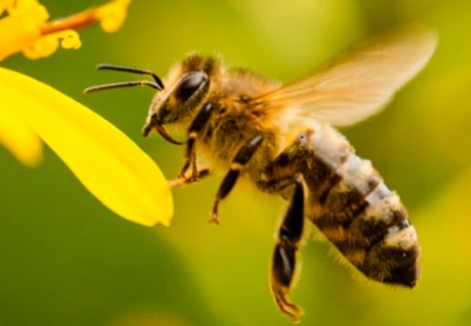

La Asociación de Apicultores Emprendedores Villareja Organizada (AAEVO) fue fundada un 2 de agosto de 2018, por la señora Ana Rodas Cuellar, Paulino Cuellar, siendo los impulsores conjuntamente con los demás socios apicultores. El objetivo de AAEVO es fortalecer la producción, transformación y comercialización de la miel en el municipio de El Villar.


AAEVO a un principio se dedicaba no solo a la producción de miel, sino a transformar la materia prima en: Pastillas de miel y propóleo, turrones con miel, jarabes, shampoo entre otros. En la gestión 2025 la Asociación de Apicultores (AAEVO) cuenta con más de 80 socios apicultores de las diferentes comunidades del municipio de El Villar, dedicándose a mejorar la producción de la miel y al acopio de la misma para su posterior comercialización.
Los socios que conforman AAEVO son de distintas comunidades del municipio de El Villar (Lagunillas, Nogales, Pampas San Agustín, Yotala entre otros).
